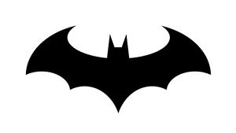

Assignment1 Batman!(by Wayne Jiang)
Useful links for Batman's information
Batman's info from Wikipedia
Anchors
Batman is a fictional superhero appearing in American comic books published by DC Comics. The character was created by artist Bob Kane and writer Bill Finger, and first appeared in Detective Comics #27, in 1939. Originally named the "Bat-Man", the character is also referred to by such epithets as the Caped Crusader, the Dark Knight, and the World's Greatest Detective.
Batman's secret identity is Bruce Wayne, a wealthy American playboy, philanthropist, and owner of Wayne Enterprises. After witnessing the murder of his parents Dr. Thomas Wayne and Martha Wayne as a child, he swore vengeance against criminals, an oath tempered by a sense of justice. Bruce Wayne trains himself physically and intellectually and crafts a bat-inspired persona to fight crime.
Batman operates in the fictional Gotham City with assistance from various supporting characters, including his butler Alfred, police commissioner Gordon, and vigilante allies such as Robin. Unlike most superheroes, Batman does not possess any superpowers; rather, he relies on his genius intellect, physical prowess, martial arts abilities, detective skills, science and technology, vast wealth, intimidation, and indomitable will. A large assortment of villains make up Batman's rogues gallery, including his archenemy, the Joker.